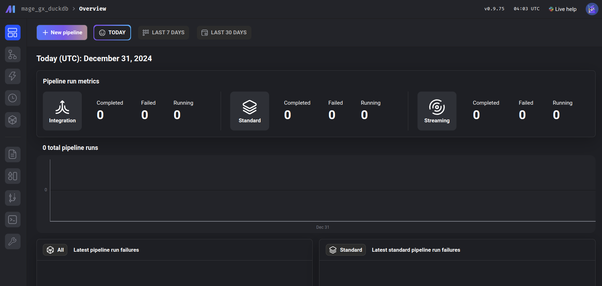

Building a data pipeline with Mage, Polars, and DuckDB
GitHub Repo: SODA to DuckDB

Where are we in the data lifecycle?
As data analysts or scientists, we often find ourselves working downstream in the data lifecycle. Most of the time, our role involves transforming and analyzing data that has already been prepared and served to us by upstream processes. However, having a deeper understanding of the entire data pipeline—from ingestion to transformation and storage—can empower us to optimize workflows, ensure data quality, and unlock new insights.
Another advantage of gaining understanding—and hands-on experience—in data engineering processes is the empathy we build with our data engineers. These are the colleagues we work closely with and rely on, making a strong, collaborative relationship essential. Hence, in this hands-on article, we will explore the Python ecosystem by examining tools such as Mage, Polars, and DuckDB. We’ll demonstrate how these tools can help us build efficient, lightweight data pipelines that take data from the source and store it in a format that is well-suited for high-performance analytics.
About the tools
In this project, we will use Mage as our data orchestrator. The tasks managed by the orchestrator will include data manipulation and transformation using Polars, as well as persistent storage with DuckDB.
What are data orchestrators?
Data orchestrators, such as Mage, are tools that help manage, schedule, and monitor workflows in data pipelines. They allow us to automate complex processes, ensuring that tasks are executed in the correct order and dependencies are handled seamlessly. By using Mage as our orchestrator, we can streamline our data pipeline and focus on building efficient workflows that allow us to set a local database appropriate for our analysis.
Data manipulation and storage
Why Polars and DuckDB? The answer lies in the size and nature of the dataset we’re working with. Since our dataset is small enough to fit in memory, we don’t need a distributed system like Spark. Polars, with its fast and memory-efficient operations, is perfect for data manipulation and transformation. Meanwhile, DuckDB provides a lightweight, yet powerful, SQL-based engine for persistent storage and querying. Together, these tools offer a simple, performant, and highly efficient solution for handling our data pipeline.
Returning to the data lifecycle diagram, we can land it in a more concrete way to show how our project will be built and executed:
First, we will fetch the data from the Socrata Open Data API (SODA) through HTTP. After that, we will generate some extra variables of our interest with Polars, to finally store it in a DuckDB database we will consume for analytics and predictive modeling. All this is orchestrated with Mage.
Tools and resources overview:
- SODA API: provides access to open datasets, serving as our data source. It contains “a wealth of open data resources from governments, non-profits, and NGOs around the world1.”
- Mage: the data orchestrator that will automate and manage the pipeline.
- Polars: a high-performance data frame library implemented in Rust, ideal for fast data manipulation.
- DuckDB: a columnar database system designed for efficient analytics and in-memory processing.
We’ve chosen the Iowa Liquor Sales dataset since it is big enough to make this ETL (extract, transform, load) pipeline interesting.
Our problem
Let’s say we work for a big chain of liquor stores in the US, Iowa. Part of the intelligence in your company is built upon the information made available through SODA API, and it feeds some of the dashboards the decision-makers consume. You also use it often to do research and predictive modeling. Some stakeholders have started complaining about the loading times of the dashboards, and you have also been a little frustrated with the time it takes to get the data to train your predictive models.
To continue building our situation, let’s imagine the year 2020—when the term “data engineer” was not as popular as it is today. You’ve just been hired as a data analyst2, and according to Google Trends, the term “data engineer” was only half as popular as it is now. Moreover, a closer look at the trend data from 2020 reveals that most searches for this term originated in tech hubs like California or Washington rather than in states like Iowa.
At this point, you know you are on your own to optimize this process3. And you already have a clear outline for this process:
- Pull the data from the API.
- Generate the variables that provide the most valuable insights for the team️.
- Store the data in a location that allows for easy and fast retrieval .
This brings us to our current challenge: finding a more agile and efficient way to make the SODA liquor sales data accessible to the rest of the company.
Solution implementation: getting started
As outlined earlier, the first step involves pulling the data from the API. However, before that, we need to set up Mage and configure the rest of our environment. To begin, we’ll clone the Git project and navigate to the project directory:
git clone https://github.com/jospablo777/mage_duckdb_pipeline.git
cd mage_duckdb_pipelineNext, we’ll set up a virtual environment and install the necessary libraries:
python -m venv venv # The first 'venv' is the command, the second is the name of the folder for the virtual environment.
source venv/bin/activate # Activate the virtual environment.
pip install -r requirements.txt # Install dependencies from the requirements file.The requirements.txt file contains the libraries required for the project, with the key players being mage-ai and duckdb. Now, that we have all our dependencies ready we can start our Mage project with:
mage startThis will open a tab in our browser that looks like this:

One of Mage’s greatest strengths is its intuitive user interface. It allows us to easily create and manage data pipelines. In this example, we’ve named our pipeline socrata_iowa_liquor_pipeline. Once the pipeline is created, we can navigate to it using the left panel, then go to the Pipelines section, where our newly created pipeline will be listed, click on it.

After opening the pipeline, navigate to the Edit pipeline section in the left panel, identified by the </> symbol. This is where we can begin constructing our pipeline. Here, you will have the option to insert a block:

Our objective is to build the following pipeline using a series of different blocks:
Great! Now that our environment is set up and we’ve familiarized ourselves with Mage’s user interface, we’ll return to Mage shortly. But first, let’s take a closer look at our data source: the Iowa Liquor Sales dataset.
SODA API: our data source
The Iowa Liquor Sales data is provided by the Iowa government through the Socrata Open Data API (SODA), a platform designed to grant access to open datasets from government agencies, non-profits, and other organizations. This API allows us to programmatically interact with our dataset of interest, enabling us to retrieve data via HTTP requests.
The dataset’s documentation provides the key information needed to access the data: the source domain (data.iowa.gov) and the dataset identifier (m3tr-qhgy). With this information, we can define the endpoint for sending our requests. The documentation also details the available variables and their respective data types. Below is an example of a base endpoint for this dataset:
https://data.iowa.gov/resource/m3tr-qhgy.csvThe dataset documentation also informs us that, to date, it consists of more than 30 million rows. Now that we know the endpoint and the size of the data, we’re ready to pull the data, right?
A sensible approach would be to retrieve the data sequentially using the paging method described in the SODA documentation. This method allows us to fetch the data in manageable batches, specified by the $limit parameter, while navigating through the dataset using the $offset parameter. The process is illustrated in the following diagram:
Naturally, I started with this approach to find a limitation in the API that was not documented. When we get to the point of pulling the records around row 20M, the data loader will get stuck, and no information will be pulled. This might be by design or due to system limitations in which deep paginations can bog the system4, making this an unreliable method to get the data5. Meaning that we will need a different strategy to retrieve the 30M records.
This brings us to the next strategy: using SoQL, the query language of the Socrata API. SoQL is quite similar to SQL, with the key difference that its syntax is structured to work within a URL format.
We will send an HTTP request to the server to query individual batches of invoices corresponding to a specific year (based on the date variable). We represent this as follows.

This approach limits pagination to the number of years in the dataset rather than the total number of records. By fetching data in yearly batches, our requests won’t get stuck at an offset of 20 million, as each year contains fewer than 3 million records.
Why are we spending so much time on this? Understanding our data source’s quirks, perks, and limitations is crucial because, ultimately, this knowledge will shape how we design our data pipeline. So it’s worth it to spend some time understanding the source system; it will save us headaches and result in a better design that is easier to maintain from the beginning.
Now that we have a clearer understanding of the upstream stage of our data—the source:
 With this in mind, we can now move on to the ingestion step.
With this in mind, we can now move on to the ingestion step.
Fetching the data
We are aware of the endpoint to request the data, and of some limitations of this API as well. We know that we cannot fetch the data as it is because at some point out pipeline will clog, and wont be able to take more data into the stream.
Due to this we will write more complex in our HTTP request using SoQL…
Bash execution
user@user-pc:~/mage_duckdb_pipeline$ mage run . socrata_iowa_liquor_pipeline
Fetching the records-per-year metadata. This might take a couple minutes..
Done! We have our year record metadata.
SODA data pull started.
Years to be fetched: 2017, 2018, 2019, 2020, 2021.
Fetching data: 100%|█████████████████████████████████████| 5/5 [10:08<00:00, 121.69s/it]
Product-related new variables, generated.
Sales and price related metrics, computed.
Volume-based features, computed.
Time-based features, computed.
Data loaded to your DuckDB database!
Pipeline run completed.conn2 <- DBI::dbConnect(
drv = duckdb::duckdb(),
dbdir = "../data/iowa_liquor.duckdb",
read_only = TRUE
)SELECT *
FROM iowa_liquor_sales
LIMIT 10tibble::tibble(query2)# A tibble: 10 × 36
invoice_line_no date store name address city zipcode
<chr> <dttm> <chr> <chr> <chr> <chr> <chr>
1 S10440300006 2013-02-05 00:00:00 2655 HY-VEE FOOD … 1200 S… CLAR… 51632
2 S16464700176 2013-12-23 00:00:00 2638 HY-VEE WINE … 5925 U… CEDA… 50613
3 S12001000067 2013-05-02 00:00:00 2561 HY-VEE FOOD … 4605 F… DES … 50321
4 S12643000007 2013-06-06 00:00:00 3973 MMDG SPIRITS… 126A W… AMES 50014
5 S14029600009 2013-08-21 00:00:00 3776 WAL-MART 511… 3101 W… DAVE… 52806
6 S15244000066 2013-10-21 00:00:00 2190 CENTRAL CITY… 1460 2… DES … 50314
7 S10238500019 2013-01-24 00:00:00 4023 WAL-MART 138… 1515 S… BOONE 50036
8 S13319200017 2013-07-11 00:00:00 4426 LIQUOR AND G… 114 CE… MARS… 50158
9 S14901500074 2013-10-02 00:00:00 4129 CYCLONE LIQU… 626 LI… AMES 50010
10 S15397800035 2013-10-29 00:00:00 2565 HY-VEE FOOD … 819 N … SPEN… 51301
# ℹ 29 more variables: store_location <chr>, county_number <chr>, county <chr>,
# category <chr>, category_name <chr>, vendor_no <chr>, vendor_name <chr>,
# itemno <chr>, im_desc <chr>, pack <dbl>, bottle_volume_ml <dbl>,
# state_bottle_cost <dbl>, state_bottle_retail <dbl>, sale_bottles <dbl>,
# sale_dollars <dbl>, sale_liters <dbl>, sale_gallons <dbl>,
# liquor_type <chr>, is_premium <lgl>, bottle_size <chr>,
# gov_profit_margin <dbl>, gov_retail_markup_percentage <dbl>, …import duckdb
con_py = duckdb.connect("../data/iowa_liquor.duckdb", read_only=True)
polars_df = con_py.sql("SELECT liquor_type, bottle_size, price_per_liter FROM iowa_liquor_sales LIMIT 10").pl()
polars_df
shape: (10, 3)
| liquor_type | bottle_size | price_per_liter |
|---|---|---|
| str | str | f32 |
| "Whisky" | "large" | 16.651428 |
| "Whisky" | "medium" | 29.92 |
| "Cream" | "medium" | 25.0 |
| "Rum" | "large" | 10.91 |
| "Whisky" | "medium" | 42.0 |
| "Whisky" | "large" | 11.994286 |
| "Rum" | "large" | 6.497143 |
| "Whisky" | "medium" | 25.879999 |
| "Gin" | "medium" | 10.013333 |
| "Vodka" | "medium" | 26.24 |
polars_df.height10About the polar bear in the header
https://knowyourmeme.com/memes/bonjour-bear
Cited works and recommended readings
- Reis, J., & Housley, M. (2022). Fundamentals of data engineering: Plan and build robust data systems. O’Reilly Media.
Footnotes
According to their web page :)↩︎
There is no budget for a “scientist,” and at this point in history, there is no such thing as a “data engineer” in Latin America Iowa.↩︎
Please pretend that the tools existed at the time. I certainly wished for a data ecosystem like this, and I was in Latin America (Little Mai and I still are, and we‚Äôre loving it ü™áüêë).‚Ü©Ô∏é
I spent a few days debugging this and initially signaled Mage as the culprit, but in the end, the SODA API was responsible.↩︎
The process will get frozen at some point with no notifications or feedback.↩︎